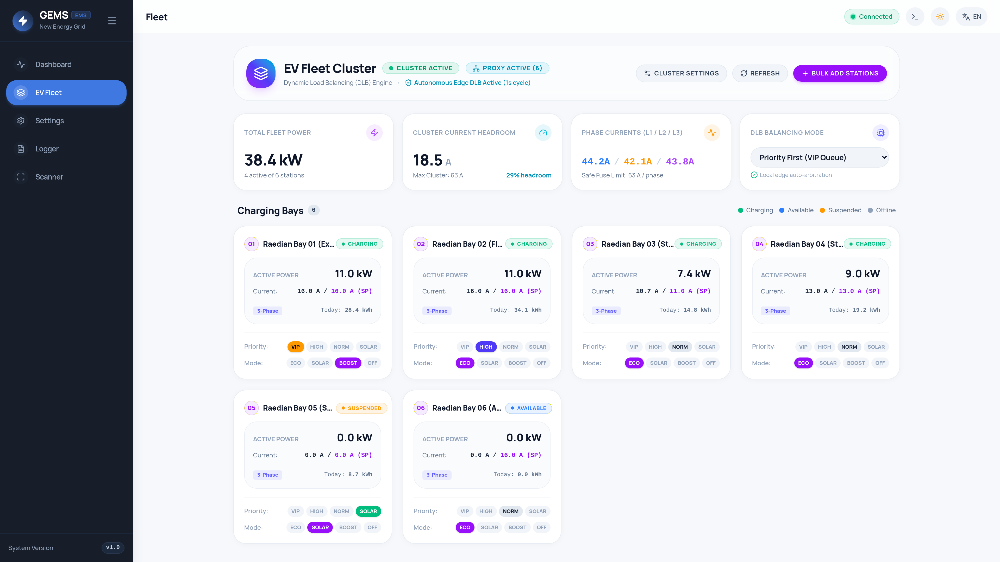
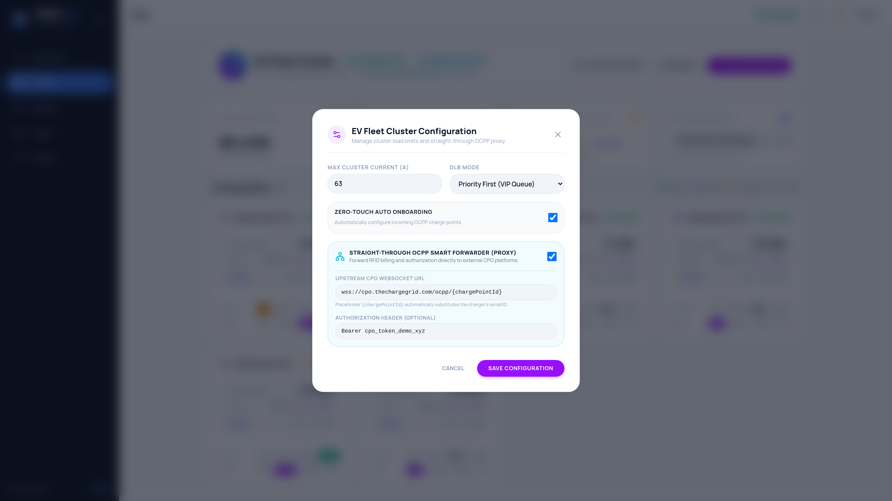

GEMS EV Fleet Cluster &
Dynamic Load Balancing (DLB)

Manual Overview & Table of Contents
This technical field manual is written for licensed electricians, commercial electrical installers, charge point operators (CPOs), and facility managers. It details the architecture, electrical mathematics, software configuration, straight-through OCPP proxying, and diagnostic procedures for the GEMS Autonomous EV Fleet Cluster & Dynamic Load Balancing (DLB) system.
| Section | Topic | Target Audience |
|---|---|---|
| Section 1 | Architectural Foundations & Communications Topology | Systems Engineers, Electrical Designers |
| Section 2 | Electrical Engineering, Fuse Protection & Standards | Licensed Electricians, Commissioning Engineers |
| Section 3 | Dynamic Load Balancing (DLB) Engine & Operating Modes | Energy Managers, System Operators |
| Section 4 | Straight-Through OCPP Smart Forwarder (Proxy Engine) | Fleet Managers, CPO Integrators |
| Section 5 | Zero-Touch Auto-Onboarding & Raedian Reference Provisioning | Field Technicians, Installers |
| Section 6 | Fleet Cockpit Interface & Bay-Level Controls | Facility Managers, Fleet Dispatchers |
| Section 7 | Field Commissioning, Verification & Overload Testing | Lead Commissioning Electricians |
| Section 8 | Troubleshooting, Diagnostics & Safety Fault Codes | Field Support Engineers, Technicians |
Section 1: Architectural Foundations & System Topology
1.1 Multi-Station Fleet Clustering on Raspberry Pi
GEMS transforms an off-the-shelf Raspberry Pi 4 or Raspberry Pi 5 into a carrier-grade, industrial multi-bay EV charge controller. A single GEMS edge node orchestrates up to 32 charging stations (expandable to 64 bays on Raspberry Pi 5) under a tightly coordinated global electrical ceiling.
The cluster controller monitors total site consumption in real time via a smart meter (P1 telegram or Modbus energy meter), calculates instantaneous non-charger base loads, and dynamically distributes all remaining electrical capacity across all active charging bays.
1.2 Baseline Load Subtraction & Per-Phase Distribution
Every electrical installation has unpredictable non-EV baseline loads: heat pumps, air conditioning, commercial lighting, kitchen appliances, and industrial machinery. GEMS subtracts these background loads in real time so the EV fleet can utilize every remaining available Ampere without exceeding the main service breaker.
1.3 Communication Protocol Support
GEMS supports a hybrid, flexible communication architecture across all charging stations in the cluster:
- OCPP 1.6-J (JSON over WebSockets): Native charge point server listening on port
8080(or8887). Chargers connect tows://<gems-ip>:8080/api/ocpp/{chargePointId}. Full support for charging profiles, meter values, and transaction states. - OCPP 2.0.1: Modern protocol support with enhanced device model variables and secure credential exchange.
- Modbus TCP / RTU: Direct register-level reading and writing of charging current limits (holding registers) for industrial wallboxes such as Raedian Modbus, Alfen Eve, or Phoenix Contact controllers.
Section 2: Electrical Engineering, Fuse Protection & Standards
2.1 Mathematical Formulations of the GEMS DLB Engine
To provide guaranteed protection against thermal breaker trips while maximizing energy transfer, GEMS evaluates the following mathematical model every 1,000 milliseconds:
| Variable Name | Default Value | Engineering Function & Description |
|---|---|---|
PhaseLimitAmps |
40.0 A | Rating of the main physical utility circuit breaker per phase. Configured in Site Settings. |
SafeLimitA |
36.0 A (0.90x) | Continuous safety threshold. The 10% margin prevents nuisance tripping caused by inductive startup spikes. |
FleetMaxCurrentA |
32.0 A | Global current ceiling for the EV sub-panel. Restricts total simultaneous charging across all bays. |
MinStationAmps |
6.0 A | Mandatory minimum current defined by IEC 61851-1. Current below 6A cannot be commanded to an EV. |
PhaseMultiplier |
1.0 or 3.0 | Multiplier based on single-phase (230V) vs. three-phase (400V star) connection of the vehicle. |
2.2 IEC 61851-1 Compliance & Shedding Guardrails
International standard IEC 61851-1 dictates that the Control Pilot (CP) PWM duty cycle must correspond to at least 6.0 Amperes (approx. 10% duty cycle) for an EV to initiate or maintain charging. An EVSE cannot legally or safely command 2A, 3A, or 5A.
6.0A × Number of Active Stations, the GEMS algorithm never throttles chargers below 6.0A. Doing so causes vehicle onboard chargers to error out or disconnect. Instead, GEMS intelligently pauses/sheds the lowest priority bays (setting pilot to 0A) while maintaining 6A+ on the remaining active bays.
2.3 Phase Imbalance & Asymmetric Load Defense
In mixed installations, some vehicles charge on 1 phase (drawing up to 16A or 32A on L1 only) while others charge on 3 phases (L1, L2, L3). If unmanaged, L1 can easily overload and trip the main fuse while L2 and L3 sit idle.
GEMS evaluates MaxPhaseA = max(L1_A, L2_A, L3_A) from the smart meter on every cycle. The bottleneck phase determines the available headroom, guaranteeing that no single phase ever breaches the thermal fuse curve.
Section 3: Dynamic Load Balancing (DLB) Engine & Modes
GEMS features three distinct operational strategies to accommodate residential multi-car garages, corporate fleets, visitor parking, and solar-heavy commercial sites.
3.1 Mode 1: Equal Share (Balanced Distribution)
Goal: Treat all connected vehicles equally. Ideal for public, employee, or residential parking where all drivers share available power proportionally.
- Calculates
ShareA = AvailableClusterA / ActiveStations. - If local solar surplus is available, solar Amperes are distributed equally on top of grid headroom.
- Automatic Shedding Protection: If
ShareA < 6.0A, GEMS calculatesMaxSupported = floor(AvailableClusterA / 6.0A). It allocates full available current across the first MaxSupported stations and safely suspends the remainder until headroom increases.
3.2 Mode 2: Priority Queue (VIP First)
Goal: Guarantee rapid charging for critical vehicles (e.g. delivery vans, emergency vehicles, or executive management) while non-priority cars charge with whatever power remains.
GEMS sorts all connected stations by priority tier on every cycle:
| Priority Tier | Weight | Allocation Behavior | Typical Field Application |
|---|---|---|---|
| VIP | Weight 4 | Receives full rated current (up to max station Amps) first. Never shed unless entire building is at risk. | Fleet vans on tight delivery schedule, on-call doctor, executive bay. |
| HIGH | Weight 3 | Receives power immediately after VIP stations have been satisfied. | Key staff, scheduled company pool cars. |
| NORMAL | Weight 2 | Shares remaining cluster headroom equally among all normal bays. Throttled or shed during peak site load. | Standard employee parking, visitor chargers, overnight residential bays. |
| SOLAR ONLY | Weight 1 | Receives 0A from grid. Operates strictly when PV export exceeds 1,400W. | Secondary vehicles, long-dwell airport or hotel parking. |
3.3 Mode 3: Solar First (Surplus PV Harvesting)
Goal: Maximize self-consumption of rooftop solar panels and eliminate grid import fees.
- GEMS monitors live grid export from the P1/Modbus meter. When export exceeds 1,400 Watts (6A single-phase minimum), the DLB engine allocates surplus solar current to charging bays.
- If solar export increases (e.g. passing clouds clear), Amperes ramp up instantaneously. If export drops below 1,400W, non-VIP bays are paused.
- VIP Override: Stations assigned to VIP Priority retain full access to grid power even in Solar First mode, ensuring critical vehicles are charged regardless of weather.
Section 4: Straight-Through OCPP Smart Forwarder (Proxy)
4.1 The Integration Challenge in Commercial & Fleet EV Charging
Most commercial fleets and company car programs require drivers to badge with an RFID token so their charging costs can be reimbursed by their employer or billed through an external charge point operator (CPO). However, external cloud CPOs are completely blind to local building electrical loads: they do not know when the building's heat pumps kick on or when solar production drops. If the external CPO commands full charging power, the local main circuit breaker trips.
4.2 The GEMS Transparent Solution
GEMS solves this dilemma through its Straight-Through OCPP Smart Forwarder (Proxy Engine):
- The physical EV wallbox points its WebSocket URL to GEMS on the local LAN.
- GEMS establishes a transparent, secure upstream WebSocket pipe to the external CPO billing platform (e.g.
wss://cpo.thechargegrid.com/ocpp/{chargePointId}). - Driver RFID authorization requests, billing transactions (
StartTransaction,StopTransaction), and meter value telemetry are forwarded upstream transparently. - Autonomous DLB Profile Arbitration: When the external CPO sends a
SetChargingProfilecommand, GEMS intercepts the frame. If the CPO requests 32A but the local grid only has 16A of headroom, GEMS safely caps the limit to 16A before passing it to the wallbox. - Outage Immunity: If the building loses internet connectivity or the upstream CPO suffers downtime, GEMS continues to govern local electrical load balancing without interruption.
4.3 Configuring the Straight-Through Proxy in GEMS
Open EV Fleet Cluster on the GEMS dashboard and click Cluster Settings:
- Enable Straight-Through OCPP Smart Forwarder (Proxy).
- Enter the Upstream CPO WebSocket URL. Use the template token
{chargePointId}which GEMS automatically substitutes with each wallbox's unique serial number:wss://cpo.thechargegrid.com/ocpp/{chargePointId} - Enter an optional Authorization Header if required by the upstream server:
Bearer eyJhbGciOiJIUzI1NiIsInR5cCI6IkpXVCJ9...
- Click Save Configuration. GEMS connects all provisioned wallboxes to the upstream endpoint within 5 seconds.

Section 5: Zero-Touch Auto-Onboarding & Raedian Reference Provisioning
5.1 Zero-Touch Auto-Onboarding Workflow
GEMS eliminates tedious manual database entry when commissioning charging stations. When Zero-Touch Auto-Onboarding is enabled in Cluster Settings:
- An installer powers on a new wallbox connected to the local network.
- The wallbox is configured to point its Central System URL to GEMS (
ws://<GEMS_IP>:8080/api/ocpp/CP_SERIAL). - The wallbox dispatches an initial OCPP
BootNotificationpacket containing its vendor and model. - GEMS inspects the vendor: if the unit is a Raedian charger, it automatically binds the
raedian_geminitemplate. - GEMS automatically reserves the next available Bay number (e.g.
Bay 07), assigns a default 16A rating inecomode withnormalpriority, and initializes live polling immediately.
5.2 Bulk Station Provisioning Wizard
For installations with 4 to 32 charging stations installed simultaneously, use the Bulk Add Stations wizard in the EV Fleet Cockpit:
| Form Parameter | Recommended Setting | Description |
|---|---|---|
| Station Name Prefix | Raedian Bay |
Prefix applied to all created stations, followed by sequential numbers (01, 02, 03...). |
| Hardware Template | Raedian (OCPP 1.6 / 2.0.1) |
Preferred driver template supporting dynamic Amperage adjustments and phase sensing. |
| Number of Stations | e.g. 8 |
Number of charging bays to generate and provision into the cluster. |
| Starting Port / Modbus ID | 8887 (or 1 for Modbus) |
Base port or Modbus Slave ID incremented for each successive bay. |
| Max Station Current | 16 A (or 32 A) |
Individual nameplate rating of the circuit breaker feeding each specific wallbox. |
5.3 Raedian Reference Hardware Configuration
Raedian is the preferred reference hardware for GEMS EV charging clusters due to its rock-solid OCPP 1.6-J / 2.0.1 implementation, rapid sub-second setpoint execution, and optional Modbus TCP failover.

Configuring Raedian Chargers to Connect to GEMS:
- Connect a laptop or tablet to the Raedian installer Wi-Fi or access its web configuration portal.
- Navigate to Network / Central System Settings.
- Set Protocol to
OCPP 1.6-J(orOCPP 2.0.1). - Set Server URL / WebSocket Endpoint to:
ws://<GEMS_LOCAL_IP>:8080/api/ocpp/{chargePointId}(Example:ws://192.168.1.150:8080/api/ocpp/RD-NEO-08412) - Disable internal wallbox offline load balancing to ensure GEMS has sole, unified authority over Amperage allocation.
- Reboot the wallbox. Within 15 seconds, the bay appears active on the GEMS Fleet Cockpit.
Section 6: Fleet Cockpit Operation & Bay-Level Controls
6.1 Top Metrics Bar Overview
The GEMS Fleet Cockpit (accessible via the left sidebar or at /#fleet) gives facility operators a comprehensive real-time view of electrical performance:
- Total Fleet Power (kW): Instantaneous cumulative active power drawn across all connected vehicles.
- Cluster Current Headroom (A): Amperes remaining before reaching the cluster or main fuse ceiling. Features a color-coded percentage bar.
- Phase Currents (L1 / L2 / L3): Live measurement of each utility phase. Allows instant detection of phase imbalance.
- DLB Balancing Mode: Live selector permitting immediate switching between Equal Share, Priority First, and Solar First without restarting the system.
6.2 Multi-Bay Card Telemetry & Controls
Each provisioned charging station is represented by an interactive bay card:
| Visual Element | Possible States | Description & Operator Action |
|---|---|---|
| Status Badge |
CHARGING AVAILABLE SUSPENDED OFFLINE |
CHARGING: Vehicle connected and drawing power. AVAILABLE: EVSE ready, no cable plugged in. SUSPENDED: Paused by DLB engine to defend main breaker. OFFLINE: Communication lost. |
| Active Power (kW) | 0.0 kW to 22.0 kW | Real-time active charging power delivered to vehicle battery. |
| Current & Setpoint | e.g. 10.7 A / 11.0 A (SP) |
Displays actual current draw versus the commanded target setpoint generated by the DLB engine. |
| Phase Mode | 1-Phase or 3-Phase |
Automatically detected from live phase voltage and current telemetry. |
| Energy Today | kWh (Cumulative) | Total kilowatt-hours delivered since midnight (00:00). Resets automatically daily. |
| Priority Buttons | VIP | HIGH | NORM | SOLAR |
Instant bay priority override. Operator can promote a vehicle to VIP status with a single click. |
| Mode Buttons | Eco | Solar | Boost | Off |
Eco: Follows global DLB schedule. Solar: Strict PV-only charging. Boost: Immediate maximum charging. Off: Disables socket output entirely. |
VIP button on that bay's card. GEMS instantly re-runs the DLB algorithm on the next 1-second tick, throttling other bays to allocate maximum power to the promoted vehicle.
Section 7: Field Commissioning, Verification & Overload Testing
7.1 Pre-Power-On Mechanical & Electrical Checklist
- [ ] Verify all wallbox sub-breakers match cable gauge ratings (minimum 2.5 mm² for 16A, 6.0 mm² for 32A).
- [ ] Verify Phase rotation (L1, L2, L3) is consistent across all wallboxes and the main utility meter.
- [ ] Verify that the P1 meter cable or Modbus RS485 energy meter is connected to the GEMS Raspberry Pi and reporting live voltage and current on the Dashboard.
- [ ] Confirm that
PhaseLimitAmpsin Settings → Contract & Grid exactly matches the physical upstream utility fuse rating.
7.2 Step-by-Step Commissioning Procedure
- Boot GEMS Edge Node: Ensure the Raspberry Pi is booted and the green LED on the GEMS Dashboard indicates system health.
- Enable Fleet Cluster: Navigate to
/#fleet, click Cluster Settings, and check Enable Fleet Cluster. Enter the shared electrical sub-panel limit (e.g.50 A). - Power Up Wallboxes: Power up the first Raedian EVSE. Check the GEMS Fleet Cockpit to confirm that Zero-Touch Auto-Onboarding registers the unit as
Bay 01. Repeat for remaining wallboxes. - Configure Upstream Proxy (If required): If billing through an external CPO platform, enter the upstream WebSocket URL and save. Verify that the proxy badge displays Proxy Active.
7.3 Full Overload Defense Stress Test
Before leaving the site, the commissioning electrician must conduct a physical overload defense test:
- Connect test loads or electric vehicles to at least three charging bays simultaneously.
- Observe on the Fleet Cockpit that all three bays ramp up charging current (e.g. 16A each = 48A total).
- Turn on a high-power building baseline load (e.g. heat pump backup element, oven, or resistive load bank) drawing 20A on Phase 1.
- Observe GEMS Response: Within 1 to 2 seconds, GEMS must detect the reduction in headroom and throttle the charging bays down (e.g. from 16A to 10A or 8A) to keep total utility import below
PhaseLimitAmps * 0.90. - Turn off the building load. GEMS must automatically ramp the charging bays back up to full power.
Section 8: Troubleshooting, Diagnostics & Safety Codes
8.1 Symptom Resolution Matrix
| Observed Symptom | Probable Root Cause | Corrective Field Action |
|---|---|---|
| Charger remains at 0A (Suspended) despite cable connected. | Available cluster headroom is below the mandatory 6.0A IEC 61851-1 minimum threshold. | Check building baseline power draw. Verify if FleetMaxCurrentA is set too low or if high-priority VIP bays are consuming all available headroom. |
| Charger stays stuck at exactly 6.0 A and refuses to ramp up. | Mode is set to Solar First without sufficient PV export, or vehicle onboard charger is limited to 1 phase. |
Switch mode to Eco or click Boost. Verify solar production on the main GEMS Dashboard. |
| OCPP Proxy shows Disconnected / 0 active. | Upstream CPO URL is incorrect, network firewall blocks outbound port 443, or invalid Auth token. | Verify that the upstream URL includes {chargePointId}. Test network connectivity by running curl -I https://... from the terminal. |
| Main utility fuse trips during simultaneous charging. | PhaseLimitAmps is set higher than physical breaker, or P1 meter update interval is delayed. |
Immediately decrease PhaseLimitAmps in Settings. Verify that P1 smart meter cable is delivering telegrams every second. |
| New wallbox is not auto-onboarded. | Zero-Touch Auto-Onboarding is disabled, or maximum cluster capacity (32 stations) has been reached. | Open Cluster Settings, ensure Zero-Touch Auto Onboarding is checked, and verify station count. |
8.2 Real-Time Diagnostic Inspection via GEMS Logger
All DLB arbitration events, Amperage throttles, and proxy communications are logged with microsecond precision in GEMS. Technicians can view live logs directly in the UI under the Logger tab or via system terminal:
# View live GEMS Fleet & DLB logs via systemd:
sudo journalctl -u gems.service -f | grep -E "(Fleet|DLB|OCPP|Proxy)"
# Sample Output during Dynamic Load Balancing throttle:
[INFO] ⚡ Fleet Auto-Onboarding: Registered new station 'Raedian Bay 04' (Bay 4, CPID: RD-NEO-08412)
[INFO] OCPP Straight-Through Proxy CP RD-NEO-08412 connected to external CPO (subprotocol: ocpp1.6)
[INFO] DLB Safety Arbitration: Capping external CPO limit (32.0 A) to local fuse headroom (13.5 A)
[INFO] Cluster Setpoints Dispatched: Bay 01=16.0A, Bay 02=16.0A, Bay 03=11.0A, Bay 04=13.5A